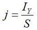
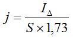
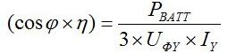
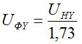
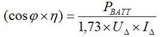
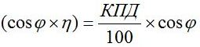

Перейти на главную страницу справочника.
Плотность тока и произведение коэффициентов мощности и полезного действия.
Плотность тока и произведение коэффициентов мощности и полезного действия для электродвигателей 3000 об/мин.
{kind=link}
Плотность тока и произведение коэффициентов мощности и полезного действия для электродвигателей 1500 об/мин.
{kind=link}
Плотность тока и произведение коэффициентов мощности и полезного действия для электродвигателей 1000 об/мин.
{kind=link}
Плотность тока и произведение коэффициентов мощности и полезного действия для электродвигателей 750 об/мин.
{kind=link}
- Выше показанные таблицы выполнены по данным из справочного пособия Девотченко Ф.С. "Замена обмотки трёхфазных электродвигателей." 1991 г.
Расчёт плотности тока и произведения коэффициентов мощности и полезного действия.
Расчёт плотности тока по сечению провода и номинальному току электродвигателя.
- Плотность тока "j" для формулы расчёта номинального или фазного тока электродвигателя, выбирается в зависимости от оборотов, мощности (внутреннего диаметра статора) и исполнения (взрывозащищённые, закрытые, открытые). При одинаковых оборотах и размерах сердечника статора, у двигателей открытого исполнения за счёт лучшего охлаждения плотность тока выше, соответственно мощность больше чем у взрывозащищённых и закрытых.
- Рассчитать выбранную производителем плотность тока для различных серий электродвигателей можно по таблицам обмоточных данных. Для формулы потребуются: номинальный ток электродвигателя и сечение провода.
- Плотность тока А/мм² при соединении обмотки в звезду. IY - номинальный ток при соединении обмотки в Y.

- Плотность тока А/мм² при соединении обмотки в треугольник. IΔ - номинальный ток при соединении обмотки в Δ.

- S - сечение провода (сечение фазы). Если обмотка выполнена в два или более провода, то общее сечение. Если обмотка выполнена в несколько параллельных ветвей, то общее сечение умножить на число параллельных ветвей.
Расчёт произведения коэффициентов мощности и полезного действия.
- Произведение коэффициентов мощности и полезного действия (cosφ× η) для формулы расчёта мощности электродвигателя, выбирается в зависимости от оборотов и внутреннего диаметра статора.
- Рассчитать произведение коэффициентов для различных серий электродвигателей можно по таблицам обмоточных данных. Для формулы потребуются: мощность, номинальный ток электродвигателя и напряжение питания.
- Произведение коэффициентов мощности и полезного действия при соединении обмотки в звезду. PВАТТ - мощность электродвигателя в ваттах, UФY - напряжение фазы при соединении обмотки в Y по формуле 2, IY - номинальный ток при соединении обмотки в Y.

- Напряжение фазы при соединении обмотки в звезду. UHY - напряжение питания электродвигателя (номинальное напряжение) при соединении обмотки в Y.

- Произведение коэффициентов мощности и полезного действия при соединении обмотки в треугольник. PВАТТ - мощность электродвигателя в ваттах, UΔ - напряжение питания электродвигателя при соединении обмотки в Δ, IΔ - номинальный ток при соединении обмотки в Δ.

- Расчёт произведения коэффициентов мощности и полезного действия по табличке электродвигателя.

27.10.2015 г.